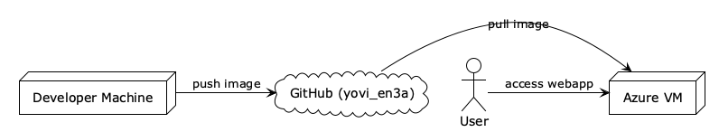
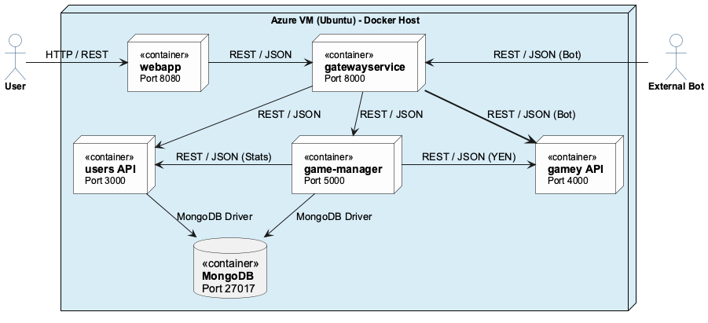
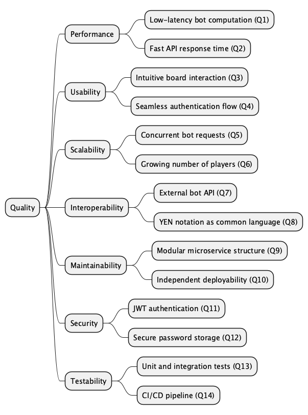

About arc42
arc42, the template for documentation of software and system architecture.
Template Version 8.2 EN. (based upon AsciiDoc version), January 2023
Created, maintained and © by Dr. Peter Hruschka, Dr. Gernot Starke and contributors. See https://arc42.org.
1. Introduction and Goals
1.1. Requirements Overview
The main goal of this project is the development of YOVI, an implementation of the "Game Y" board game for the game development company "Micrati". The system must be a robust and scalable solution that combines modern web development technologies along with Rust’s efficient computational logic, which will use YEN notation to communicate with the Web Applcation. The game allows players to face bots implementing different difficulties and game strategies. Real-time multiplayer mode is planned as a future feature.
Functional requirements:
-
The system will allow users to play against bots with different difficulty levels
-
(Planned) Real-time multiplayer mode allowing users to play against other players
-
The size of the board, as well as the strategies and difficulty of the bots to play against can be selected by the user
-
User must be able to register and login and both statistics and results of games will be also recorded
-
The application must be deployed and publicly accessible via the Web
-
The system will contain a Rust module for verifying win conditions and suggesting a "next move"
1.2. Quality Goals
The top three (max five) quality goals for the architecture whose fulfillment is of highest importance to the major stakeholders. We really mean quality goals for the architecture. Don’t confuse them with project goals. They are not necessarily identical.
Consider this overview of potential topics (based upon the ISO 25010 standard):

You should know the quality goals of your most important stakeholders, since they will influence fundamental architectural decisions. Make sure to be very concrete about these qualities, avoid buzzwords. If you as an architect do not know how the quality of your work will be judged…
A table with quality goals and concrete scenarios, ordered by priorities
| Quality Goal | Description |
|---|---|
Performance |
The system must ensure low-latency interactions by using Rust for heavy computations and YEN notation for high-speed communication between modules. |
Usability |
The application must provide an intuitive and easy to use interface for seamless board interaction and strategy selection. |
Scalability |
The system should handle a growing number of players and concurrent bot requests without slowing down. |
Interoperability |
The application must allow external bots to interact with both the system and players. |
Maintainability |
The system is designed to be easy to fix and update due to its modular structure, allowing us to modify different subsystems separately. |
Security |
User data must be securely stored and will be protected against unauthorized access. |
Testability |
The system will have appropiate testing to ensure software correctness. |
1.3. Stakeholders
| Role/Name | Contact | Expectations |
|---|---|---|
Micrati |
Project Owner |
A scalable game suite that showcases high performance and supports future variants of Game Y. |
Users |
Users of the Game |
A smooth and engaging game experience with a user-friendly interface. |
Evaluators |
Professors |
Adherence to arc42 standards, correct use of YEN notation, and high quality in both Rust and TypeScript. |
2. Architecture Constraints
The following constraints are the "boundary conditions" that limit the freedom of design decisions for the gamey project. They are derived from the lab assignment requirements.
2.1. Technical Constraints
| Constraint | Description |
|---|---|
Frontend Implementation |
The Web application and user interface must be implemented using TypeScript. |
Logic Module |
The move suggestion and win verification engine must be implemented in Rust. |
Data Exchange Format |
All game state communication must utilize JSON following the YEN notation. |
Deployment & CI/CD |
The application must be publicly accessible via the Web. |
2.2. Organizational Constraints
| Constraint | Description |
|---|---|
Documentation Standard |
Documentation must follow the arc42 template and include Architectural Decision Records (ADRs). |
Testing Requirements |
Mandatory coverage for Unit, Integration, End-to-End (e2e), and Load testing. |
Project Management |
A github repository tracking Issue Tracking, Meeting Minutes, and Code Reviews must be used. |
2.3. Conventions
| Constraint | Description |
|---|---|
YEN Notation |
Mandatory string format for representing board layouts (e.g., |
AI Strategy Pattern |
The computer opponent must implement multiple selectable strategies and support varying difficulty levels. |
Bot Compatibility |
The application must provide a documented External API with a |
3. Context and Scope
3.1. Business Context

| Communication Partner | Input | Output |
|---|---|---|
User |
- Login credentials |
- Authentication result |
External Bots |
- API requests |
- Game data |
3.2. Technical Context

| Communication Partner | Input | Output |
|---|---|---|
User |
- Login credentials |
- Authentication result |
Web Frontend |
- Requests from the user (login, moves, strategy) |
- Forwards requests to Gateway Service |
Gateway Service |
- Requests from Frontend |
- Forwards requests to Users Service, Game Manager, GameY |
Users Service |
- Registration/Login data from API |
- User created / validated |
GameY |
- Game moves from API |
- Game state updates |
Bot (internal) |
- Game state |
- Next action |
MongoDB |
- Queries from Users Service |
- Returns requested user and game data |
4. Solution Strategy
4.1. Technologies used
4.1.1. FrontEnd
-
React + Typescript: Used for the principal face of the proyect, for the game interface and for the users registry.
-
Vite: Used for constructing the FrontEnd.
4.1.2. BackEnd
-
Node.js: Used for developing the backend microservices:
users(registration, login, stats),game-manager(game orchestration) andgatewayservice(single entry point for all API requests). -
Express: Used for developing the REST APIs that allow communication between the Frontend and the backend microservices.
-
Rust: Used for developing the bots and to be used as the game engine.
-
Cargo: Used for building and compiling rust proyect.
-
MongoDB: Used as the database for both
users(usersdb) andgame-manager(gamesdb). Its document-based model fits naturally with JSON, which is the main communication format in the application, and makes it easier to store and retrieve flexible data structures without the overhead of a relational schema.
4.1.3. Infraestructure
-
Docker + Docker Compose: Used for containerizing each microservice independently and orchestrating them together, ensuring the stack works the same way across different environments.
-
Github Actions: Used for automatizing tasks such as passing the test, compiling code before we push something into the repository
-
SonarCloud: Used for verifying the quality of the code.
-
Gitflow for branch strategy: We are using gitflow as branching strategy as we need keep a record of the changes, and because we are having different versions being coded at the same time so we need to keep them save.
4.2. Top-Level decomposition decisions
-
Strategy pattern: Used for the bots, having the YBot trait as an interface used for the different bots implemented.
4.3. How to achieve key quality goals
-
Performance: The game and the bots are developed in Rust, making the time responses lower than any other programming language.
-
Usability: The application must be user friendly, making the user feel comfortable while going through the application.
-
Maintability: The application must persist over time.
-
Security: The application must protect the users data by validating into the server all the movements by any user.
-
Testability: The application must be tested, using github actions to perform that tests before each push.
4.4. Organizational decisions
-
The use of GitHub for communicating beween members of the team.
-
A weekly meeting to clarify doubts about the project and decide what will be done during the week.
-
A record of these meetings will be kept in the repository’s wiki on GitHub.
-
Pull requests will be used to prevent problems with overwriting code.
-
Wiki in GitHub will be used for publishing information about the different modules so everyone in the team could see and understand the most critical parts of the proyect in case we need it.
4.5. Arquitecture Pattern Used
For developing our system, we use a microservices architecture, based on having different independent services that communicate with each other via REST APIs. The system is composed of 5 microservices:
-
webapp: Frontend layer served via Nginx.
-
gatewayservice: Single entry point for all external API requests, routing them to the appropriate microservice.
-
users: Handles user registration, login, statistics and match history.
-
game-manager: Orchestrates the game flow, applying moves and interacting with
gameyfor bot decisions. -
gamey: The game engine implemented in Rust, responsible for move validation, win detection and bot logic.
5. Building Block View
The building block view shows the static decomposition of the system into building blocks (modules, components, subsystems, classes, interfaces, packages, libraries, frameworks, layers, partitions, tiers, functions, macros, operations, data structures, …) as well as their dependencies (relationships, associations, …)
This view is mandatory for every architecture documentation. In analogy to a house this is the floor plan.
Maintain an overview of your source code by making its structure understandable through abstraction.
This allows you to communicate with your stakeholder on an abstract level without disclosing implementation details.
The building block view is a hierarchical collection of black boxes and white boxes (see figure below) and their descriptions.

Level 1 is the white box description of the overall system together with black box descriptions of all contained building blocks.
Level 2 zooms into some building blocks of level 1. Thus it contains the white box description of selected building blocks of level 1, together with black box descriptions of their internal building blocks.
Level 3 zooms into selected building blocks of level 2, and so on.
See Building Block View in the arc42 documentation.
5.1. Whitebox Overall System

- Motivation
-
This is a high-level view of the project which follows a microservices architecture consisting of a frontend application, an API Gateway, and specialized backend services that communicate through HTTP REST APIs. The system persists data in a shared MongoDB database.
- Contained Building Blocks
| Name | Responsibility | Technology |
|---|---|---|
WebApp |
Frontend user interface providing player interactions (login, game selection, gameplay, statistics) |
React, TypeScript, Vite |
Gateway Service |
API Gateway that routes all client requests to appropriate microservices, manages JWT authentication and CORS |
Node.js |
User Service |
Manages user registration, authentication, storage of player profiles, statistics, and game history |
Node.js, MongoDB, JWT, bcrypt |
Game Manager |
Orchestrates game sessions, coordinates with Gamey for bot moves |
Node.js, MongoDB |
Gamey Engine |
Implements core game logic, bot strategies , and coordinate calculations |
Rust |
MongoDB |
Persistent data storage for user accounts and game sessions |
MongoDB |
5.2. Level 2
5.2.1. White Box Gamey

- Contained Building Blocks
| Name | Responsibility |
|---|---|
Bot Server |
Exposes RESTful endpoints for bot move selection and win detection. Accepts game state in YEN format and returns move coordinates or game status |
Core Logic |
Internal game engine: implements rules, board state, move validation |
Bot Registry |
Internal bot manager: maintains random/beginner/medium bot implementations |
- Important Interfaces
-
API Endpoints:
-
GET /status- Health check, returns service status -
POST /v1/ybot/choose/{bot_id}- Request bot move-
Input: YEN game state (JSON)
-
Output:
{api_version, bot_id, coords: {x, y, z}}
-
-
POST /v1/ybot/checkWin- Check game status-
Input: YEN game state (JSON)
-
Output:
{api_version, game_over: boolean, winner: number|null}
-
-
5.2.2. White Box WebApp

- Contained Building Blocks
| Name | Responsibility |
|---|---|
Landing Page |
Initial entry point providing game overview and navigation options to login or register |
Login Form |
User authentication interface, validates credentials and obtains JWT token for session |
Register Form |
User registration interface for creating new player accounts with profile information |
Menu View |
Main dashboard after authentication, serves as navigation hub to other features |
How To Play |
Instructions and tutorials explaining game rules, mechanics, and strategies |
Game Selection |
Customization interface for game parameters (bot difficulty, board size) before game start |
Game UI |
Main game interface displaying board state, accepting player moves, and showing bot responses |
Stats View |
Displays individual player statistics, win/loss records, and performance metrics |
Ranking View |
Shows leaderboard with top players and their current rankings |
6. Runtime View
This section illustrates key runtime operations and interactions among the system’s components.
6.1. User registration
This scenario shows how a user registers in the system, including how the frontend and backend communicate.

6.2. User Login
This scenario shows how a user logs into the system, including how the frontend and backend communicate.

6.3. Game loop
This scenario shows how a user plays a game, including interactions with the web app, game core, and bot service.

7. Deployment View
7.1. Infrastructure Level 1
This level describes the distribution of the system across the environments used during the development and production phases of the YOVI_en3a project.
Motivation The project is designed to be highly portable. By using a Virtual Machine on Azure, we ensure that the application is accessible via a public IP/DNS for grading and testing, while the local environment is used for rapid development.
Quality and/or Performance Features
-
Availability: The Azure VM provides a stable 24/7 uptime.
-
Security: Management access is restricted via SSH (Port 22). Public access is strictly limited to Ports 8080 and 8000 via Azure Network Security Groups.
-
Portability: The entire stack is containerized, allowing the team to switch from Azure to any other cloud provider with minimal configuration changes.
Mapping
| Element | Software Artifacts (Building Blocks) |
|---|---|
Local Developer PC |
Source code, Node.js environment, Rust toolchain, and local Docker Desktop. |
Azure VM (Ubuntu) |
Production containers: |
7.2. Infrastructure Level 2
This level zooms into the internal structure of the production environment hosted on Azure.

7.2.1. Azure Virtual Machine (Docker Host)
The system is orchestrated using Docker Compose within a single Ubuntu-based Virtual Machine.
Motivation Using a single VM with Docker Compose reduces architectural complexity and costs for the University project while maintaining complete isolation between the microservices.
Quality and/or Performance Features
-
Resource Efficiency: The
gameyengine uses a multi-stage Docker build (based ondebian:bookworm-slim). This ensures the VM does not waste RAM or Disk space on the Rust compiler during execution. -
Orchestration & Decoupling: The game-manager acts as a central orchestrator, ensuring that only one service depends on the gamey engine. This isolates the complex Rust logic, simplifying maintenance and decoupling game state from raw calculations.
-
Persistence: A Docker Volume is used for the MongoDB container, ensuring data remains intact even if the container is recreated.
-
Isolation: All containers communicate through a private bridge network (
monitor-net).
Mapping
| Infrastructure Element | Artifact | Execution Environment |
|---|---|---|
Container: webapp |
React/Vite SPA |
Nginx / Static HTTP Server (Port 8080) |
Container: gatewayservice |
Express Proxy / JWT Auth |
Node.js 22 (Entry Point, Port 8000) |
Container: users |
Node.js / Express API |
Node.js 22 Runtime |
Container: game-manager |
Node.js / Orchestrator |
Node.js 22 Runtime |
Container: gamey |
Rust Server Binary |
Debian Slim (No compiler) |
Container: mongodb |
MongoDB Image |
Mongo 6.0+ Engine |
Storage Volume |
User Database Files |
Persistent Host File System |
Azure connections

7.2.2. Communication Channels
The following channels facilitate data exchange between the infrastructure nodes:
-
HTTP (Port 80): Used by the end-user’s browser to download the
webappassets. -
REST/JSON (Port 8000): The single entry point for all API communication. The
gatewayservicereceives requests from the frontend and routes them tousers,game-manager, orgameybased on the URL path. -
Internal Microservice Communication: Services communicate within the
monitor-netDocker network. Thegame-managerrequests move validations fromgameyvia internal REST calls. -
Database Access (Port 27017): Internal connection using the MongoDB Wire Protocol. Used by
usersfor profile management andgame-managerfor persistent board state storage. -
SSH (Port 22): Secure management channel for developers to perform
git pullanddocker-compose upoperations.
8. Cross-cutting Concepts
8.1. Domain Concepts
8.1.1. User Management
Users are identified by a unique username and email. Each user has an associated statistics document (userstats) that tracks game performance. The relationship between users and their stats is maintained via MongoDB ObjectId references.
8.1.2. Game Representation (YEN Notation)
All game states are represented using YEN notation, a custom format that encodes the board layout, current turn, players and board size. This notation is used across the microservices as the common language for game state communication.
8.1.3. Game Flow
A game is played between a player and a bot:
-
The player can be either a human(turn 0) or an external bot communicating through the gateway API.
-
The internal bot (turn 1) is managed by
gamey.
The game-manager orchestrates the flow:
-
Receives the player move
-
Applies the move
-
Requests the bot move from gamey
-
Returns the updated state of the board
8.2. Security Concepts
8.2.1. Authentication with JWT
All authenticated endpoints use JSON Web Tokens (JWT). Tokens are generated
at login with a 24-hour expiration and must be included in subsequent requests.
The JWT secret is stored as an environment variable and injected via docker-compose.
8.2.2. Password Encryption
All user passwords are hashed using bcrypt with a salt factor of 10 before
being stored in MongoDB`. Plain text passwords are never persisted.
8.2.3. MongoDB Authentication
MongoDB requires username and password authentication via SCRAM-SHA-256.
Credentials are stored in a .env file on the server and injected as environment
variables. The authSource=admin parameter is required for all connections.
8.2.4. Internal Network Isolation
All microservices communicate through an internal Docker network (monitor-net).
Only the gateway (port 8000) and webapp (port 8080) are exposed externally.
Direct access to users, game-manager, gamey and MongoDB is restricted to
internal container communication.
8.3. Architecture and Design Patterns
8.3.1. Gateway Pattern
All external requests enter the system through a single gateway service running
on port 8000. The gateway proxies requests to the appropriate microservice based
on the URL prefix (/api/users, /api/game-manager). Communication with gamey is
not a generic proxy — only the specific endpoint POST /api/gamey/play is exposed.
8.3.2. Proxy Request Pattern
The gateway uses a generic proxyRequest function that forwards any HTTP method,
body, headers and query parameters to the target service. This allows adding
new microservices without changing the proxy logic.
8.3.3. Database per Microservice
Only the microservices that require persistence have their own MongoDB database:
-
usersconnects tousersdb -
game-managerconnects togamesdb
Both communication are made with a shared MongoDB container.
This ensures data isolation while reducing infrastructure overhead.
8.4. Development Concepts
8.4.1. Environment Variables
All sensitive configuration (MongoDB credentials, JWT secret, service URLs) is
managed through environment variables. Local development uses a .env file,
while production injects them via docker-compose` on the server.
8.4.2. API Documentation
The gatewayservice exposes a Swagger UI at /api-docs using swagger-ui-express
and a single openapi.yaml that documents all public API endpoints across microservices
(/api/users, /api/game-manager, /api/gamey).
8.4.3. Testing Strategy
Node.js microservices (users, game-manager, gateway) use Vitest and Supertest for unit and
integration testing. Each Node.js service has a test:coverage script that generates
coverage reports. The gamey service uses cargo test for unit testing and
cargo llvm-cov for coverage reporting. The CI/CD pipeline runs all tests on
every push and pull request before building and deploying.
8.5. Operational Concepts
8.5.1. Containerization
All microservices run as Docker containers managed by a single docker-compose.yml.
Each service has its own Dockerfile based on lightweight base images (node:22-alpine,
nginx:stable-alpine, debian:bookworm-slim for Rust).
8.5.2. CI/CD Pipeline
Two GitHub Actions workflows manage the pipeline:
-
build.yml: runs on every push and pull request, executes tests and SonarQube analysis.
-
release-deploy.yml: triggered on release, builds and publishes Docker images to GitHub Container Registry (ghcr.io), then deploys to the Azure VM via SSH.
8.5.3. Memory Management
The Azure VM has limited RAM (848MB). Swap (2GB) is configured with swappiness=10 to prioritize RAM usage and avoid performance degradation.
This section describes overall, principal regulations and solution ideas that are relevant in multiple parts (= cross-cutting) of your system. Such concepts are often related to multiple building blocks. They can include many different topics, such as
-
models, especially domain models
-
architecture or design patterns
-
rules for using specific technology
-
principal, often technical decisions of an overarching (= cross-cutting) nature
-
implementation rules
Concepts form the basis for conceptual integrity (consistency, homogeneity) of the architecture. Thus, they are an important contribution to achieve inner qualities of your system.
Some of these concepts cannot be assigned to individual building blocks, e.g. security or safety.
The form can be varied:
-
concept papers with any kind of structure
-
cross-cutting model excerpts or scenarios using notations of the architecture views
-
sample implementations, especially for technical concepts
-
reference to typical usage of standard frameworks (e.g. using Hibernate for object/relational mapping)
A potential (but not mandatory) structure for this section could be:
-
Domain concepts
-
User Experience concepts (UX)
-
Safety and security concepts
-
Architecture and design patterns
-
"Under-the-hood"
-
development concepts
-
operational concepts
Note: it might be difficult to assign individual concepts to one specific topic on this list.

See Concepts in the arc42 documentation.
9. Architecture Decisions
The detailed Architectural Decisions are documented in the project Wiki: Architectural Decisions
10. Quality Requirements
10.1. Quality Tree

10.2. Quality Scenarios
10.2.1. Performance
| ID | Q1 |
|---|---|
Scenario |
A player requests a bot move during a game. The bot (gamey, written in Rust) computes and returns the move coordinates within 1000ms under normal load. |
Stimulus |
POST |
Response |
Bot move computed and game state updated in under 1000ms |
Priority |
High |
| ID | Q2 |
|---|---|
Scenario |
A user sends a login request to the gateway. The gateway proxies the request to the users service and returns a JWT token within 1000ms. |
Stimulus |
POST |
Response |
JWT token returned in under 1000ms |
Priority |
High |
10.2.2. Usability
| ID | Q3 |
|---|---|
Scenario |
A new user accesses the webapp for the first time. Without any instructions they are able to register, login and start a game within 5 minutes. |
Stimulus |
User navigates to the webapp landing page |
Response |
User completes registration, login and game creation without taking a long time thinking how to achieve it |
Priority |
High |
| ID | Q4 |
|---|---|
Scenario |
A user attempts to register with an invalid email. The system displays a clear and descriptive error message without reloading the page. |
Stimulus |
POST |
Response |
Error message displayed inline within 1000ms |
Priority |
Medium |
10.2.3. Scalability
| ID | Q5 |
|---|---|
Scenario |
50 concurrent players request bot moves simultaneously. The system processes all requests without errors and response time does not exceed 2 seconds. |
Stimulus |
50 simultaneous POST |
Response |
All requests processed successfully within 2 seconds |
Priority |
Medium |
| ID | Q6 |
|---|---|
Scenario |
The number of registered users doubles. The system continues to operate normally without requiring architectural changes. |
Stimulus |
User database grows significantly |
Response |
No degradation in performance or availability |
Priority |
Low |
10.2.4. Interoperability
| ID | Q7 |
|---|---|
Scenario |
An external bot sends a POST request to |
Stimulus |
POST |
Response |
Bot move coordinates returned in JSON format |
Priority |
High |
| ID | Q8 |
|---|---|
Scenario |
A new microservice needs to communicate game state with game-manager. The developer uses YEN notation as the common format and integration is completed without modifying existing services. |
Stimulus |
New service integrated into the system |
Response |
Service communicates successfully using YEN notation |
Priority |
Medium |
10.2.5. Maintainability
| ID | Q9 |
|---|---|
Scenario |
A developer needs to update the game logic in game-manager. The change is made, tested and deployed without modifying users, gamey or the gateway. |
Stimulus |
Change request for game-manager logic |
Response |
Change deployed independently without affecting other services |
Priority |
High |
| ID | Q10 |
|---|---|
Scenario |
A new microservice needs to be added to the system. The developer adds it to docker-compose.yml and the gateway without modifying existing services. |
Stimulus |
New microservice added to the system |
Response |
New service deployed and accessible through the gateway within one day |
Priority |
Medium |
10.2.6. Security
| ID | Q11 |
|---|---|
Scenario |
A user attempts to access |
Stimulus |
Request to |
Response |
401 Unauthorized returned by the gateway |
Priority |
High |
| ID | Q12 |
|---|---|
Scenario |
An attacker gains read access to the MongoDB database. User passwords are not recoverable because they are stored as bcrypt hashes with a salt factor of 10. |
Stimulus |
Unauthorized database access |
Response |
Passwords remain unrecoverable due to bcrypt hashing |
Priority |
High |
10.2.7. Testability
| ID | Q13 |
|---|---|
Scenario |
A developer modifies an endpoint in game-manager. The existing integration test suite detects any regression and reports it within 1 minute of running npm test. |
Stimulus |
Code change in game-manager |
Response |
Test suite runs and reports pass or failure within 1 minute |
Priority |
High |
| ID | Q14 |
|---|---|
Scenario |
A pull request is opened on GitHub or a push is made to master. The CI/CD pipeline automatically runs all tests and coverage for all services and blocks the merge if any test fails. |
Stimulus |
Pull request opened on GitHub (any branch) or push to master |
Response |
GitHub Actions runs all tests and SonarQube analysis reporting results within 5 minutes |
Priority |
High |
11. Risks and Technical Debts
11.1. Technical Risks
| Risk | Description | Possible Mitigation |
|---|---|---|
Single Point of Failure at Gateway |
All external traffic is routed through a single gateway service on port 8000. If the service crashes or overloads, the entire application becomes unreachable, despite the availability of the microservices. |
Implement health checks and automatic container restart policies in docker-compose. |
JWT Secret Exposure Risk |
The JWT secret used to sign authentication tokens is stored in a .env file on the Azure server and injected via docker-compose. If the server is compromised or the file is accidentally committed to the repository, all user sessions could be forged. |
Use a secrets manager (GitHub Secrets or Azure Key Vault) for production credentials. Rotate the JWT secret periodically. |
MongoDB Single Container |
Both usersdb and gamesdb share a single MongoDB container. A failure in this container would cause data loss for both users and game records, with no replication or backup strategy. |
Implement automated database backups. |
Rust / Node.js Communications via HTTP |
The game Rust service communicates with Node.js microservices through HTTP calls. Network latency and serialization overhead between these services could degrade perceived game performance, especially for bot move requests. |
|
Lack of External Bot Limitations |
The public play API endpoint exposed for external bots has no rate limiting or authentication. A malicious attack could flood the game with requests, consuming all available Rust processing capacity. |
Add rate limiting middleware to the gateway for the /api/gamey route. Require an API key for external bot access. |
11.2. Technical Debts
| Debt | Description | Possible Solution |
|---|---|---|
Missing API Versioning |
All REST endpoints in the gateway and microservices are exposed without versioning (/api/users/login instead of /api/v1/users/login). Any breaking API change will require coordinated updates across all consumers simultaneously. |
Introduce API versioning. |
No Structured Logging |
Microservices output logs to stdout using console.log without formatting. |
Adopt a structured logging library that outputs JSON logs. |
Swagger Documentation Incomplete |
The |
Complete the gateway’s |
12. Glossary
| Term | Definition |
|---|---|
ADR (Architectural Decision Record) |
A document that captures an important architectural decision made during the project, including its context and its consequences/responsabilities. ADRs for this project are located in the GitHub Wiki. |
Azure VM |
The Virtual Machine hosted on Microsoft Azure where the YOVI application is deployed in production. |
bcrypt |
A password-hashing function used to securely store user passwords, which is used in this project. |
Bot |
An artificial intelligence opponent in YOVI. Internal bots are implemented in Rust. External bots can also interact with the system through the public bot API. |
Cargo |
The build system and package manager for Rust. Used to compile, test, and run the gamey microservice. |
CI/CD (Continuous Integration / Continuous Deployment) |
The automated pipeline implemented via GitHub Actions that runs tests and code quality checks on every push and deploys the application to the Azure VM on each release. |
Docker |
A platform for packaging and running applications in isolated containers. All YOVI microservices are put in containers using Docker and managed with docker-compose. |
docker-compose |
A tool for defining and running multi-container Docker applications via a single docker-compose.yml configuration file. Used to manage the full YOVI application, including all microservices, MongoDB, Grafana… |
Express |
A minimal and flexible Node.js web framework used in the users, game-manager and gateway microservices to define REST API routes. |
Gateway |
A microservice that acts as the single entry point for all external HTTP requests. It guides requests to the appropriate internal microservice based on the URL prefix (for example: |
GitHub Actions |
The CI/CD platform integrated with the YOVI GitHub repository. It automates testing, code quality analysis, Docker image builds, and production deployments. |
Gitflow |
The branching strategy chosen by the YOVI team. It organizes work into feature branches, a develop branch for integration, and a master branch for stable releases. |
JWT (JSON Web Token) |
A compact, URL-safe token format used for authenticating users in YOVI. Tokens are issued at login and expire after 24 hours. |
Microservice |
An independently deployable service that handles a specific business capability. YOVI is composed of five main microservices: webapp, gatewayservice, users, game-manager and gamey. |
MongoDB |
A document-oriented NoSQL database used for data persistence. A single shared MongoDB container hosts both usersdb and gamesdb. |
React |
A JavaScript library for building user interfaces. Used together with TypeScript to implement the YOVI webapp frontend. |
Rust |
A programming language focused on performance and memory safety. Used in YOVI to implement the gamey microservice (game engine and bots) due to its high computational efficiency. |
SonarCloud |
A cloud-based code quality and security analysis service integrated into the YOVI CI pipeline. It checks for bugs, vulnerabilities, and test coverage. |
Swagger / OpenAPI |
An open standard and toolset for describing REST APIs. In YOVI, the |
Strategy Pattern |
A behavioral design pattern used for the YOVI bots. Each bot implementation provides a different strategy and difficulty level. |
TypeScript |
A strongly-typed superset of JavaScript. Used mainly in the frontend development of webapp microservice. |
Vite |
A fast build tool and development server used to bundle and serve the YOVI React/TypeScript frontend application. |
Vitest |
A Vite-native unit testing framework used to write and run tests for the Node.js microservices. |
YEN Notation |
A string format used as the common language for representing game states across all YOVI microservices. It encodes the board layout, current turn, players, and board size (example: "layout": "B/.B/RB./B..R"). |